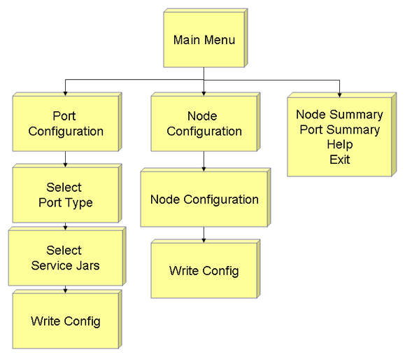
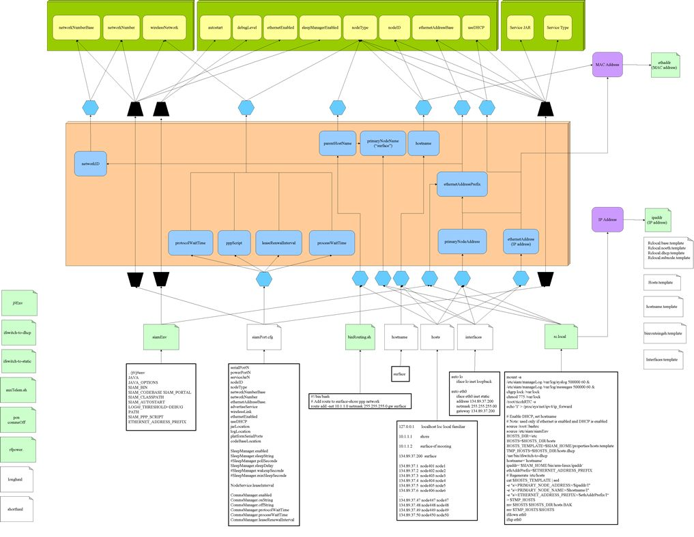

ConfigToolSYNOPSIS
DESCRIPTIONConfiguration tools for MMC and SIAM
Configuring MMC hardware and the SIAM application can be complicated, since the parameters are represented in a large number of files, which include Linux system files as well as application specific configuration files. Also, the logic for setting up a SIAM node is fairly complicated. There are also special configuration requirements, including the ability to configure a node via a serial console (i.e., in the absence of an ethernet network), and that the configuration tool be cross-platform.
ConfigTool is an application that addresses these requirements by presenting configuration parameters in logical groups, masking both the distributed nature of the configuration and the logic required to set up a SIAM node. ConfigTool is a web application (Java servlet) that runs inside of a Jetty servlet container/web server. ConfigTool implements the configuration logic, generates the HTML user interface and reads and writes the configuration files. The user interface may be operated using most common web browsers, including the links text-based browser which may be used over a serial console. The links browser is used by default when ConfigTool is run from the SIAM command line.
Operation Overview
The ConfigTool server is started from the MMC command line using the wrapper script, configt, which starts the server and points the links browser to the ConfigTool URL to display the user interface. ConfigTool requires root permissions to run, and may not be run concurrently with the SIAM application (the configt script will not permit this).
The table below summarizes basic ConfigTool operations, like starting and stopping the server.
Basic Operations
Starting ConfigTool using configt Runs ConfigTool server and starts links browser
Usage: configt [-d] [-s <delaySec>] [-r <id>] [<configTool options>]
-d : send output to configt.out [/dev/null]
-s : start delay [20]
-r : required uid (Win32 only) [0]
--help : display use messageNotes:
- configt must be run as root (use su -m) under Linux or the -r option must
be used under Win32/Cygwin to set the root user ID.- The SIAM application may not be run concurrently with configt.
Starting ConfigTool Server
Exit the SIAM application before starting the ConfigTool server.
The ConfigTool server must be run as root.
Usage: configTool -[wml] [-p <configtool properties>]
w: x86-Win32
m: MMC
l: x86-Linux System
p: properties file [default is $SIAM_HOME/properties/configtool.properties]Starting the configTool server When running in the background,
redirect output to a file to allow a text browser to run in the same session, e.g.:configTool -w -p myconfigtool.properties >& server.log &
configTool -m >& /dev/null &
Starting the User Interface
The user interface is accessed via web browser, by pointing to the configTool servlet URL:
Start links browser on localhost (in a different console session from the server or with server running in the background):
links http://localhost:8181/configConfigure host node137:
http://node137:8181/configConfigure host by IP address:
http://137.89.4.137:8181/config
Stopping the User Interface
Stopping the user interface is done simply by exiting the web browser or directing the browser to another page.
To exit the links browser, use
ALT-F x
or
ESC f x (ESC invokes the links menu bar, f selects the file menu, x exits links)
Stopping the ConfigTool Server
To stop the ConfigTool server, use the "Exit ConfigTool" button on the user interface main page.
It is also possible to use
CTRL-C
or
kill <JVM PID>to stop a server running in the foreground or background, respectively.
Navigation Overview
ConfigTool is guides the user through configuration processes through a pair of simple "wizards". Each wizard guides the user through a series of related
configuration options. Users should exit the configuration tool after completing either of the configuration wizard paths. That is, do not go through the Node Configuration Path and the Port Configuration path in the same session. Instead, exit ConfigTool after finishing one of these before beginning the next.When the server is started, it reads the current state represented by the relevant configuration files. Once the current configuration is loaded, configuration changes are maintained in the server's copy of the configuration. Changes are not written back to the configuration files until the user selects the "finish" option on the last wizard menu. Thus, the settings represented by the ConfigTool wizard may not reflect the actual current state of the system. The current state of the configuration settings can be reloaded at any time using the "Reload Configuration" option from the main menu.
There are currently two wizards: one for node hardware and software configuration options, and another for configuring the MMC serial ports (see diagram below). In addition, it is possible to review a summary of the current configuration settings by selecting an option from the main menu.
ConfigTool Navigation  Navigation Screen Shots
Main Menu
Port Configuration
Node Configuration
Service Jars
Node Summary
Port Summary
Users make configuration choices using HTML forms presented by the wizard. Once the configuration options have all been set, it presents of a summary of the options configured and allows the user write the changes back to the configuration files, cancel or go back to make further changes. Once the user chooses to write the configuration changes (finish), all configuration files are updated. The ConfigTool provides a way to preserve the original configuration by creating backups of the files it changes. The ConfigTool configuration file (SIAM_HOME/properties/configtool.properties) has two parameters for configuring the use of backups. These are described in the ConfigTool configuration section.
Main Menu Options
- Configure Node
- Configure Ports
- Reload Configuration
- Current Node Settings
- Current Port Settings
- Exit ConfigTool
Using links Browser
- Up/Down arrows: previous/next link on page
- Left/Right Arrows: previous/next page
- ESC: menu
- CTRL-R: reload current page
- Controls
- Buttons
- Dropdown Box
- Checkbox
- Text Box
- ESC-F-x: exit links
- Links menu options File, View, Link, Downloads, Setup, Help
Configuration Parameters
The table below describes the configuration parameters exposed by the ConfigTool user interface. Some of these parameters map directly into configuration files; a number of other system configuration parameters are generated internally by ConfigTool, based on selected settings.For a more complete mapping of system configuration parameters, see this diagram:
: 
Node Configuration Options The node ID is a positive (long) integer which comprises a unique identifier within the SSDS data system. This number may be obtained from the SSDS ID database (http://ssdspub.mbari.org:8080/access/index.jsp). long integer > 0 Nodes may be either primary nodes or subnodes. On a MOOS mooring network, there is one primary node, which acts as a gateway connecting the mooring network to the shore network. The other nodes are subnodes, which differ in their physical connection to the primary node or other subnodes; ethernet (fiber optic) and RS-422 (copper) connections are supported. primary_node
ETH_subnode
RS422_subnodeWhen sleepManagerEnabled is TRUE, the SIAM application manages power by suspending processor operation whenever there is no activity scheduled for some minimum period of time.Otherwise, the processor runs continuously. Note that when the processor is sleeping, the console does not respond to input. Instrument serial ports may be configured to wake up the processor upon receiving characters (this is done by setting the appropriate bits of the arguments to the setPWER command in suspend.sh, but is not currently brought out through the ConfigTool interface). TRUE
FALSEIf this parameter is set to true, the SIAM node application will be started automatically when the node is booted. TRUE
FALSEThis setting determines the amount of debug information provided and logged by the SIAM application when it is running. In order of increasing information, the supported levels are ERROR, WARN, INFO and DEBUG. This parameter affects the amount of storage space required for the node logs; DEBUG should not be used for deployment. ERROR
WARN
INFO
DEBUGlrRadioConnection Long Range Radio Connection
portal
auxPortal
auxConsole
nonelrRadioDevice Long Range Radio Device
freewave
globalstar
nullModem
nonesrRadioConnection Short Range Radio Connection
auxConsole
powerSvc
nonesrRadioDevice Short Range Radio Device
freewave
nullModem
noneIf this parameter is set to TRUE, the ethernet networking will be brought up when the node is booted. TRUE
FALSENetwork number is combined with the networkNumberBase to create the networkID for the mooring network. The networkID is used to create a range of network addresses used by different MOOS mooring networks. A complete mooring network IP addresses consists of
<ethernetAddressBase>.<networkID=networkNumberBase+NetworkNumber>.<node OUI>
Where node OUI is the 6th octet of the MMC ethernet controller MAC address.This setting applies only to primary nodes.
integer > 0 This parameter comprises the first two octets of the mooring network addresses used for the mooring network (e.g., 134.89. for a mooring network connected to the MBARI network). A complete mooring network IP addresses consists of
<ethernetAddressBase>.<networkID=networkNumberBase+NetworkNumber>.<node OUI>
Where node OUI is the 6th octet of the MMC ethernet controller MAC address. The networkID is used to create a range of network addresses used by different MOOS mooring networks.N.N.
1<N<255pppAddressBase First two octets of PPP address (no trailing dot)
e.g. 10.1 The third octet of a node's IP address is obtained by summing the networkNumberBase and the networkNumber (below), resulting in a networkID. The networkID is used to create a range of network addresses used by different MOOS mooring networks. The networkNumber base may depend on, for example, the building network that the mooring needs to connect to. For MBARI, the network number base 35; network addresses A complete mooring network IP addresses consists of
<ethernetAddressBase>.<networkID=networkNumberBase+NetworkNumber>.<node OUI>
Where node OUI is the 6th octet of the MMC ethernet controller MAC address.This setting applies only to primary nodes.
0 < integer < 255 wakeOnSerialRx Wake the node when serial characters are received DISABLED
ENABLED
Port Configuration Options The Service Type parameter indicates the source of the instrument service code for a particular instrument serial port. When set to PUCK, the SIAM application will query the associated serial port using the PUCK protocol to obtain instrument service code. When set to JAR, the Service JAR parameter specifies the name of a Java Archive (JAR) file containing insturment service code. If set to DOWNLINK, the associated serial port will be used to connect to a subnode. If set to NULL, the port is unused. PUCK
JAR
DOWNLINK
NULLThe name of a Java Archive (JAR) file containing SIAM instrument service code for a specified instrument serial port. JAR file name
Configuration File Reference
siamPort.cfg Sets SIAM application configuration parameters serialPortN
powerPortN
serviceJarN
nodeID
nodeType
networkNumberBase
networkNumber
ethernetAddressBase.
advertiseService
wirelessLink
ethernetEnabled
DHCP
jarLocation
logLocation
platformSerialPorts
codeBaseLocationSleepManager.enabled
SleepManager.sleepString
#SleepManager.pollSeconds
SleepManager.sleepDelay
#SleepManager.wakeupSeconds
#SleepManager.minSleepSecondsNodeService.leaseInterval
CommsManager.enabled
CommsManager.onString
CommsManager.offString
CommsManager.protocolWaitTime
CommsManager.processWaitTime
CommsManager.leaseRenewalIntervalsiamEnv Sets environment SIAM application and ops user /j9/j9env . /j9/j9env
JAVA
JAVA_OPTIONS
SIAM_BIN
SIAM_CODEBASE PARENT_HOST
SIAM_CLASSPATH
SIAM_AUTOSTART
LOG4J_THRESHOLD=DEBUG
PATH
SIAM_PPP_SCRIPT
ETHERNET_ADDRESS_PREFIXrc.local
Performs user defined system configuration operations at the end of the boot process mount
/etc/siam/manageLog /var/log/syslog
/root/ricohRTC
/proc/sys/net/ipv4/ip_forward
source /root/.bashrc
source /etc/siam/siamEnv
$SIAM_HOME/properties/hosts.template
/etc/hosts
/etc/hostname
/usr/bin/ifswitch-to-dhcp
$SIAM_HOME/bin/arm-linux/ipaddr
ifdown
ifupPRIMARY_NODE_NAME
PRIMARY_NODE_ADDRESS
ETHERNET_ADDRESS_PREFIX/var/log/syslog
/var/log/messages
/var/lock
/var/lock
/root/ricohRTC -s
/proc/sys/net/ipv4/ip_forward/usr/bin/ifswitch-to-dhcp
/etc/hostname
/etc/hosts
eth0hosts
Maps known host names to network IP addresses PRIMARY_NODE_NAME
PRIMARY_NODE_ADDRESS
ETHERNET_ADDRESS_PREFIX127.0.0.1 localhost loc local familiar 10.1.1.1 shore # portal node's ppp interface address
10.1.1.2 surface-rf mooring # surface node's ppp interface address
134.89.37.200 surface # surface node's ethernet address (static)
# Subnode names have sidearm OUI appended
134.89.37.1 node401 node1
134.89.37.2 node402 node2
134.89.37.3 node403 node3hostname
Defines the name of the local ethernet interface hostname ("surface") binRouting.sh Defines network routing for surface-shore ppp network PRIMARY_NODE_NAME
route add -net 10.1.1.0 netmask 255.255.255.0 gw surfaceinterfaces
Defines ethernet interfaces PRIMARY_NODE_ADDRESS auto lo
iface lo inet loopbackauto eth0
iface eth0 inet static
address 134.89.37.200
netmask 255.255.255.00
gateway 134.89.37.200
longhaul
Defines primary wireless link ppp parameters /etc/siam/rfpower.ops shorthaul Defines secondary wireless link ppp parameters auxTelem.sh Periodically enables secondary wireless link /etc/siam/siamEnv
/etc/siam/cpuAwake
/etc/siam/rfpower
j9env Defines environment for j9 JVM PATH
JAVA_HOME
LD_LIBRARY_PATHJAVA_HOME
PATH
LD_LIBRARY_PATH.bashrc Defines environment for ops user /etc/bashrc
SIAM_HOMEPS1='\h:\w\$ ' suspend.sh Suspends processor operation as part of power managment /bin/sync
/root/setPWER
/root/suspend
/root/ricohRTC
# ifdown eth0
# ifup eth0# Set PWER
# The current bits set are:
# 0x80000000 = SA1100 RTC (/root/suspend needs this)
# 0x8 and 0x4 = Exar UARTs (/dev/ttySX{0-15})
# 0x1 = MSP430
# See the Sidearm4 documentation on the the assignment
# of GPIO bits. Set additional bits as necessary.
/root/setPWER 80000001/root/suspend -v $sleepTime
/root/ricohRTC -sConfigTool Servlet Configuration
The stable release of the ConfigTool servlet does not require configuration; by default it is configured to run on an MMC node. When bench testing on other platforms (x86-win32/cygwin or x86-linux), the servlet needs to be configured appropriately. The ConfigTool servlet is configured via a set of Java properties files (specifying paths to the required files and executables) and configuration file templates (defining configuration-file-specific parameters and defining the configuration items in each configuration file and the user interface controls used to represent them).
configtool.properties config.configBackupType Backup policy for configuration file backups.
Valid values are as follows :
- SIMPLE: single backup copy (myConfigFile.bak)
- DATE : use date (myConfigFile.bak.mmddyy)
- INDEX : use date and index (myConfigFile.bak.mmddyy-n)
Default value is INDEX
Values are case insensitive config.configBackupPath Path (directory) where configuration backups
should be stored (relative to SIAM_HOME).
Default value (commented out) stores backups
in associated config file location.
Path names with spaces are allowed; quoting is
not needed or permitted. Do not use leading
or trailing slashes/backslashes.
Values are case sensitive
Examples:
config.configBackupPath=myBackupDirectory
config.configBackupPath=My Backup Directory
config.configBackupPath=myBackupDirectory/foojarPath Specifies directory where instrument service JAR files are located
relative to siam_homeexample:
jarPath=ports/
serialPorts Number of serial ports to configure. The ConfigItems for each serial port must be defined in <configFile>.properties, and there must be already be entries in siamPort.cfg for all serial ports and their power ports. <configFile>.type=<TYPE> Declares a configuration file named <configFile> of type <TYPE> to the configuration servlet. The <TYPE> string identifies which config file should be represented in the user interface.
the <configFile> name is used to specify the properties file (see properties.<configFile>) and the location of the configuration file (see config.<configFile>)Currently supported types are:
SIAMPORT
SIAMENV
RCLOCAL
HOSTS
HOSTNAME
INTERFACES
BINROUTINGSHexample:
siamEnv.type=SIAMENV
properties.<configFile> Specifies the (configuration file specific) properties used by the ConfigFile object and defines the ConfigItems represented by the ConfigFile, including the user interface controls used to represent them in the user interface.
This allows some aspects of the user interface to be modified without recompiling any code.
relative to siam_home
example:
properties.rcLocal=properties/rclocal.properties
siam_home Specifies the path to the top level SIAM directory. siam_home is an absolute path and should match the $SIAM_HOME environment variable.
example:
siam_home=/mnt/hda/siam/ipAddressCommand
Specifies path to a command that will return the system's IP address. This is, in general, a native binary, and resides in different directories within the SIAM directory structure, depending on the platform. relative to siam_home
example:
ipAddressCommand=bin/arm-linux/ipaddrethernetAddressCommand
Specifies path to a command that will return the system's MAC address. This is, in general, a native binary, and resides in different directories within the SIAM directory structure, depending on the platform. relative to siam_home
example:
ethernetAddressCommand=bin/arm-linux/ethaddrscriptRunner
Specifies path to a command that will run scripts on the platform. This is needed to allow scripts to be executed from within Java, as Runtime.exec() only works correctly on native executables. This is, in general, a native binary, and resides in different directories within the SIAM directory structure, depending on the platform. relative to siam_home
example:
scriptRunner=bin/arm-linux/commandRunneractionScript
Specifies the path to the post-configuration script that should be run after modifying the configuration files.
Note: this script is run as root. Damage to system could occur if the wrong script is specified, or if the script is modified.
relative to siam_home
example:
actionScript=utils/configActionactionPath Specifies the PATH environment variable for the action script.
absolute path, does not resolve $PATH environment variable
example:
actionPath=.:/bin:/sbin:/usr/bin:/usr/sbin:...config.<configFile> Specifies the path to the actual configuration file to be modified or replaced.
config paths are absoluteexample:
config.siamPort=/mnt/hda/siam/properties/siamPort.cfg
Configuration File Specific Properties
In general, each configuration file has a set of parameters that are represented (brought out) to the ConfigTool user interface. Internally, these parameters are represented as ConfigItems, which manage the value of their parameters and maintains an HTML control in the user interface to that is used to set their value. The ConfigItem must be configured to read (import) and write (export) its parameter's value from/to the configuration file. The HTML control it displays to set the parameter value must also be defined and configured. Each configuration file uses a Java properties file to define and configure its ConfigItems and HTML controls.
Property entries in the configuration file properties files have the general form:
<ConfigFile>.<configItem>.pageID=<htmlPageName>
Additionally, configuration file properties files may define other parameters and properties used internally.
<configFile>.properties <ConfigFile>.<configItem>.pageID=<htmlPageName> example:
SiamPortCfg.nodeType.pageID=NodeMain<ConfigFile>.<configItem>.controlType=<CONTROL_TYPE> example:
SiamPortCfg.nodeType.controlType=SELECT<ConfigFile>.<configItem>.validateRegexp= <regexp> example:
SiamPortCfg.nodeType.validateRegexp=<ConfigFile>.<configItem>.values=<value>, <value>,... example:
SiamPortCfg.nodeType.values=primary_node,ETH_subnode,RS422_subnode<ConfigFile>.<configItem>.importRegexp=<regexp> example:
SiamPortCfg.nodeType.importRegexp=^[ \\t]*nodeType[ \\t]*=[ \\t]*<ConfigFile>.<configItem>.exportRegexp=<regexp> example:
SiamPortCfg.nodeType.exportRegexp=nodeType = <VALUE><ConfigFile>.<configItem>.attribute.ROW=<row> example:
SiamPortCfg.nodeType.attribute.ROW=1<ConfigFile>.<configItem>.attribute.COL=<col> example:
SiamPortCfg.nodeType.attribute.COL=0<ConfigFile>.<configItem>.attribute.<attributeName>=<value> <ConfigFile>.<configItem>.itemRef=<configItemName> example:
Tags.tagHostname.itemRef=hostname<ConfigFile>.<configItem>.valueRef=<configItemName> example:
SiamPortCfg.serviceJar0.valueRef=jarList
APPENDICES
MMC Serial Ports
Serial Port Function Device Name Console port /dev/ttySA0 Synchronous serial port /dev/ttySA1 Debug port /dev/ttySA2 Instrument backplane serial ports /dev/ttySX0 through /dev/ttySX11 RF modem/transceiver port 0 /dev/ttySX13 (RFIO connector closest to edge of sidearm) RF modem/transceiver port 1 /dev/ttySX12 Uplink RS-485 port /dev/ttySX14 MSP-430 /dev/ttySX15 Configuring Power Management
# Set PWER
# Set PWER
# The current bits set are:
# 0x80000000 = SA1100 RTC (/root/suspend needs this)
# 0x8 and 0x4 = Exar UARTs (/dev/ttySX{0-15})
# 0x1 = MSP430
# See the Sidearm4 documentation on the the assignment
# of GPIO bits. Set additional bits as necessary.
/root/setPWER 80000001Configuring PPP Networking
ConfigTool Internals Reference
BUGS
TO DO
ENVIRONMENT
The following environment variables must be set:
SEE ALSO
SIAM installation
{kind=link}
{kind=link}
{kind=link}
{kind=link}
{kind=link}
{kind=link}